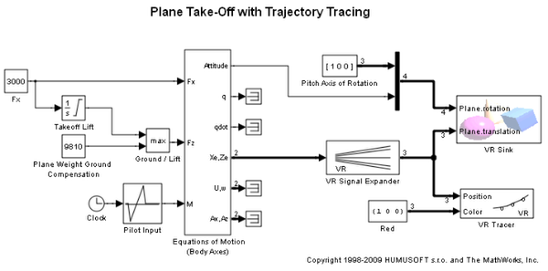
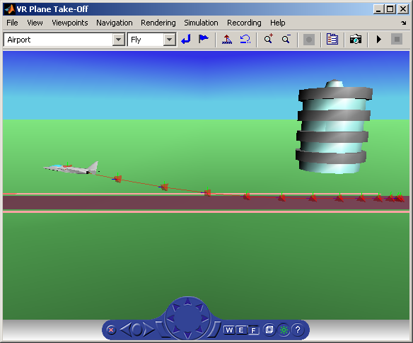

Plane Take-Off with Trajectory Tracing
This model is a variant of the vrtkoff example that shows how to trace trajectory of a moving object (the plane) in the scene.
VR Tracer block adds the following behavior to the scene visualization:
A marker is placed at the current position of the traced object in regular time intervals specified by the block sample time. Markers form a visible trace of the object's trajectory. The distance between markers indicates the speed of the object at given position. In addition, marker color can be dynamically set using the second block input to represent another model property or status.
VR Tracer block allows you to specify the following parameters:
- Associated VRML File
- Parent node of markers to create (useful when the traced object is inside other object in the scene hierarchy)
- General marker shape to be selected from the listbox (select None for displaying line/triads below only)
- Checkboxes to select whether you want to display trajectory as a line and/or axis-aligned triads
- Marker scale
- Marker color, to be defined in block input or in the block mask.
- Sample time
- Checkbox to ensure that a viewer window is open during simulation
In this example, a tetrahedron shape is used as a general shape marker, together with both trajectory line and triads.
 